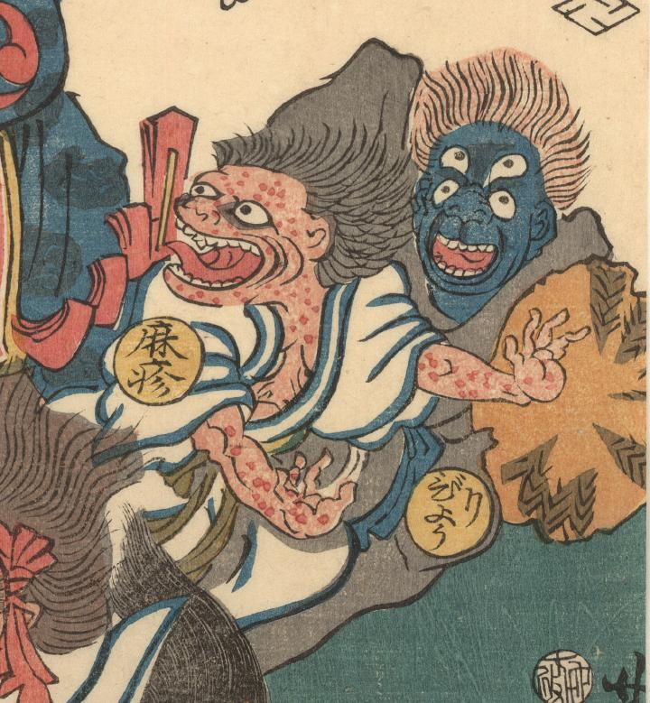

麻疹；ハシカ，病理；ビョウリ

武人に追い立てられる病理の化物。肌は群青色で四つ目、灰色の着物をまとい笠を持っている。
著作者：歌川芳虎／出典：親書誌：U426_nichibunken_0007：麻疹後の養生；ハシカノチノヨウジョウ／日付：2006／資源識別子：U426_nichibunken_0007_0001_0004
Copyright (c)2010- International Research Center for Japanese Studies, Kyoto, Japan. All rights reserved.